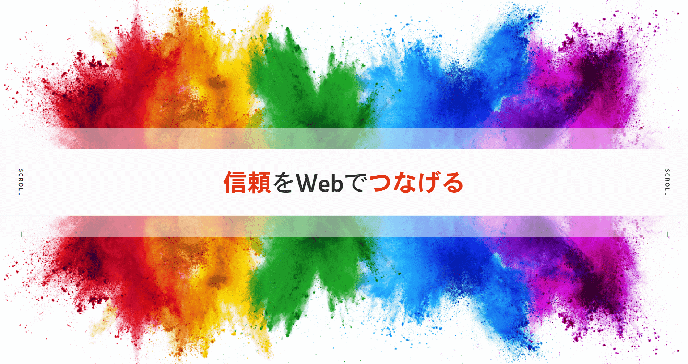
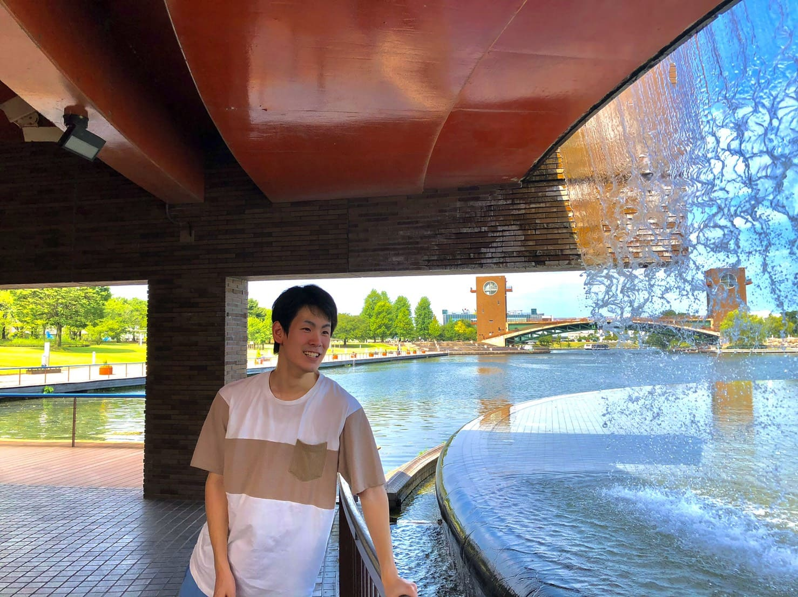

Port folio

Yamanada Kyogo
山名田 恭吾
Yamanada Kyogo
山名田 恭吾
| 学習言語 | 学習到達度 |
|---|---|
| HTML | 6ヵ月～ |
| CSS | 6ヵ月～ |
| JavaScript | 6ヵ月～ |
| jQuery | 6ヵ月～ |
| WordPress | 6ヵ月～ |
・アルバイトでVBScript、PHP、DB言語の実務経験中
・その他大学の講義を通してPython、C言語などの学習経験
※模写の表記があるものは模写サイトです。
FaiThLinKの表記があるものはチーム制作物です。
サービス内容
HTML＆CSS、JavaScript、jQuery、WordPress等を使用したWebサイト制作
既存サイトの修正、改善
デザインからコーディングまで
どんな些細なことでも受け付けております。
ご相談、お仕事の依頼等、
気軽にご連絡ください。
メールでのお問い合わせは こちら
Twitterアカウントは
こちら
※返事はできる限り早くするよう心掛けております。
1～2日ほどかかることもございますがご了承くださいませ。